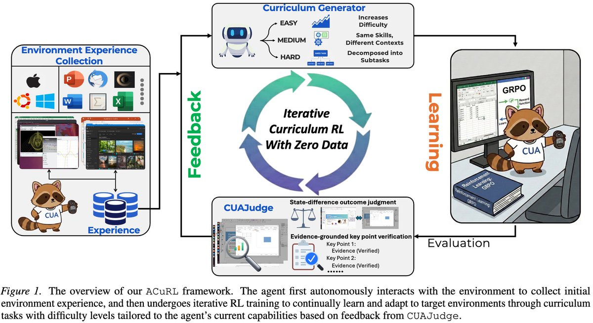
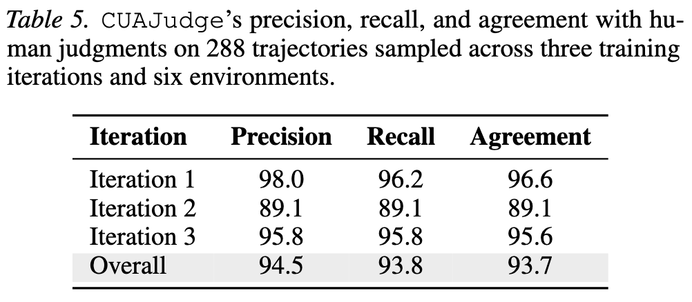
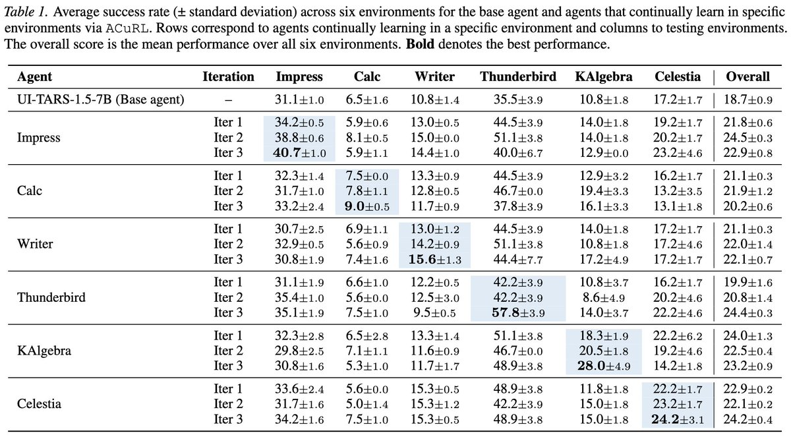
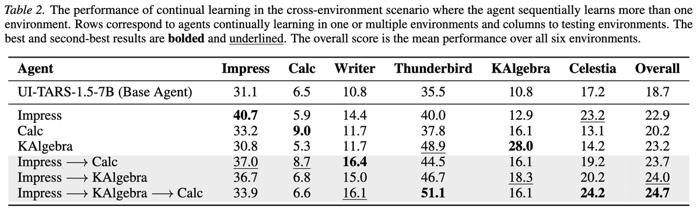
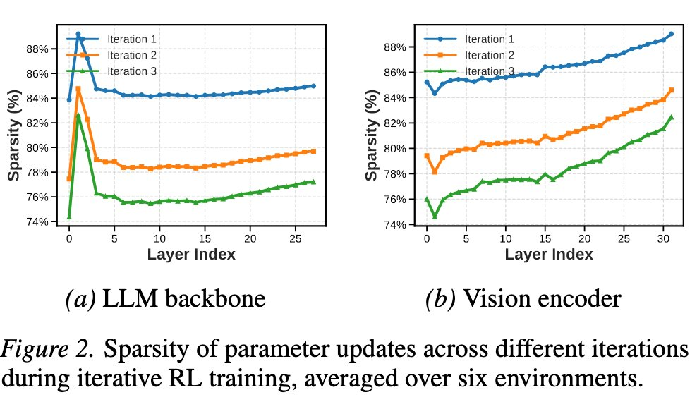
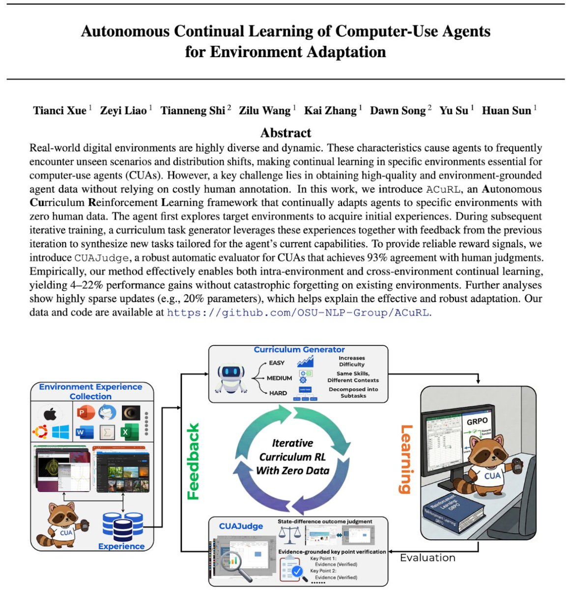

它到底要解决什么问题
不要把它理解成“再做一个 UI agent”。它关心的是 agent 面对环境变化时如何继续学习。
Computer-use agent 的输入通常是任务描述和屏幕观察，输出是点击、键盘、滚动、等待等动作。现有训练范式大多默认环境是静态的：训练时见过某个软件版本、某种分辨率、某些网页或桌面状态，评估时也尽量保持类似。但现实里的软件并不静态：菜单会改、按钮会换位置、系统平台会迁移、分辨率会变化，甚至用户打开的是模型从未见过的小众专业软件。
训练覆盖不可能完整
桌面和网页应用数量巨大，靠人工收集所有软件、所有版本、所有初始状态的专家轨迹不可扩展。
环境变化会导致崩塌
论文展示了 LibreOffice 版本更新、Ubuntu 到 Windows 迁移、低分辨率设置等变化会让同一任务集上的成功率明显下降。
多步任务没有天然可验证 reward
数学题能用答案判对错，代码题能跑测试；但“把幻灯片格式调好”这类任务必须看完整轨迹、最终状态和任务关键点。
ACuRL 的完整流程
ACuRL = Autonomous Curriculum Reinforcement Learning。它不是单个模型结构，而是任务生成、自动评估、在线 RL、环境编排四件事的闭环。
环境探索：先让 agent 摸清软件
系统把目标软件环境打开，让当前 agent 在其中自主探索，记录观察和动作序列。这个轨迹不一定完成具体任务，它的作用是让后续任务生成器知道软件界面里有什么、哪些按钮可用、常见状态长什么样。
上下文 review：把真实内容放进软件
对文档、邮件、幻灯片、表格等环境，作者会从 web 收集多样化上下文材料，让 agent 只读浏览这些材料，形成 context trajectories。这样生成的任务不只是“点击菜单 A”，而是“基于这份具体文档/表格做某种编辑”。
Iteration 0：先生成一批基础任务测能力
零人工数据意味着一开始连训练任务都没有。ACuRL 先让生成器根据探索轨迹和上下文轨迹合成一批基础任务，用来评估当前 agent 对目标软件的初始能力；这些 iteration 0 任务不直接训练，而是为后面的课程生成提供反馈。
能力评估：每个任务跑多次 rollout
对每个任务采样多条执行轨迹，用 CUAJudge 判断成功或失败，然后计算该任务的平均成功率。这个成功率就是课程生成器判断“太简单 / 正合适 / 太难”的依据。
课程生成：按照当前能力调难度
成功率高于 70% 的任务被认为 agent 已基本掌握，下一轮生成更复杂、更长、更组合的任务；30%-70% 的任务继续换上下文和场景练同类技能；低于 30% 的任务会被拆成更简单的子任务，降低学习门槛。
多轮 RL：用成功/失败 reward 更新策略
每轮基于新生成的任务做 GRPO 类在线强化学习。每条轨迹得到一个二值 reward，组内归一化成 advantage，再把同一个 trajectory-level advantage 分配给这条轨迹里的每个动作 token。

CUAJudge：为什么它是关键
ACuRL 最脆弱也最关键的地方是自动 reward。reward 如果错，RL 就会学会钻 evaluator 的空子。
CUAJudge 的目标是判断一条多步 computer-use 轨迹是否完成任务。它不是只看最后一张截图，也不是简单问模型“成功了吗”。论文把它拆成三个阶段：从任务描述抽取关键点，挑出轨迹中的关键截图，再结合任务、关键点、截图和动作历史做 outcome judgment。
初始状态 vs 最终状态
很多桌面任务的核心不是某一步点击是否正确，而是最终文件、表格、幻灯片是否发生了符合要求的变化。CUAJudge 显式比较初始和最终状态，降低长轨迹噪声。
每个关键点都要证据
它要求对每个成功关键点给出支持截图和动作证据。这样做的意义是减少 false positive：不能因为界面看起来差不多就判成功。
| 验证对象 | 论文报告的结果 | 应该如何理解 |
|---|---|---|
| 1,444 条公开 OSWorld 轨迹，对比 rule-based evaluator | CUAJudge 总体 agreement 87.5%，高于 WebJudge 的 85.6%；论文按四类 agent 轨迹报告 precision，并总结 CUAJudge 相比 WebJudge 平均提升约 4.1 个百分点。 | 它在公开轨迹上更保守一些，尤其降低 false positive；但 O3 轨迹上的 precision 仍只有 42.1%，说明 evaluator 不是完美 oracle。 |
| 训练过程中的 288 条 on-policy 轨迹，对比人工判断 | 总体 precision 94.5%，recall 93.8%，agreement 93.7%。 | 这是推文里“93% human agreement”的来源，范围是论文抽样的 6 个环境和 3 个迭代，不应外推为所有软件环境都 93%。 |
| 去掉 state difference 的消融 | overall agreement 从 87.5% 降到 86.0%，部分 agent 上 recall 下降明显。 | 状态差异分析不是装饰模块，它确实帮助判断桌面任务是否真的改变了最终状态。 |

训练到底怎么做
这部分决定了 ACuRL 是否可复现，也决定了“zero human data”的真实含义。
底座模型
论文主要用 UI-TARS-1.5-7B 和 Qwen3-VL-8B-Instruct 做 base agent。UI-TARS 用于考察 GUI agent 的持续适配；Qwen3-VL-8B 则用于展示更强 VLM 底座也能受益。
每轮任务数量
每个环境每轮生成 256 个任务。默认 task generator 使用 GPT-5；附录显示用 Qwen3-VL-8B 替代生成器时，Impress iteration 1 仍有 29.5% 成功率，略低于 GPT-5 的 30.8%。
在线 RL 设置
严格 on-policy，3 个 iteration，每个 iteration 75 step，总计 225 RL step；batch size 16，group size 8，learning rate 1e-6，基于 VeRL 实现 GRPO。
环境编排成本
训练用 8 张 H100；环境 host 推荐 96 CPU cores 和 384GB RAM，可稳定承载 128 个虚拟环境。README 明确提供环境创建/删除 API、异步预加载和异步评估，以减少 GPU 等待。
实验评估了什么，结果有多强
评估对象是任务成功率，不是聊天质量、不是截图理解准确率，也不是用户满意度。
论文覆盖 6 个代表性环境：LibreOffice Impress、Writer、Calc，Thunderbird，KAlgebra，Celestia。任务来自 OSWorld、OfficeWorld 和 ScienceBoard。核心指标是 success rate，也就是 benchmark 的 rule-based protocol 或少量 LLM-as-judge protocol 判定 agent 是否完成任务。
| 实验 | 报告结果 | 我的解读 |
|---|---|---|
| 单环境持续学习 | 目标环境逐轮提升约 3-29 个百分点；例如 UI-TARS 在 Impress 上 31.1% 到 40.7%，Qwen3-VL 在 Impress 上 27.0% 到 39.2%。 | 提升是真实且有意义的，特别是低基线环境；但很多最终成功率仍低于 50%，所以它解决的是“适配增益”，不是“桌面 agent 已可靠可用”。 |
| 跨环境持续学习 | UI-TARS Base overall 19.5，到 Impress → KAlgebra → Calc 后 25.9；Qwen3-VL Base overall 22.0，到五环境序列后 31.7。 | 这说明训练一个环境不必然造成灾难性遗忘，甚至可能学到可迁移的界面操作策略；但表中仍有个别环境分数回落，需要看任务级分布。 |
| 环境变化适配 | Calc 在版本更新、Windows 迁移、低分辨率变化下有明显掉分；ACuRL 训练后报告最高 145% 相对恢复。 | 这是论文最贴近产品部署的一组实验：真实软件更新会破坏 agent，持续适配能把部分性能拉回来。 |
| 组件消融 | Impress 上完整方法 Iter 3 为 40.7；去掉 iterative training 降到 32.6，去掉 curriculum learning 降到 36.4。 | 结论比较清楚：只在固定任务池上继续训练会过拟合；不根据成功率调节任务难度，收益也会变小。 |


哪些地方不能过度解读
这篇工作很有启发，但仍不是“agent 自主变强”的完整答案。
依赖强外部模型
默认任务生成器是 GPT-5，CUAJudge outcome 判断也依赖 GPT-5-mini 或混合 VLM/API。它减少了人工标注，但没有消除外部模型服务和 API 成本。
自动 reward 仍可能被 hack
CUAJudge-human agreement 很高，但不是 100%。RL 一旦针对 evaluator 优化，仍可能学到 evaluator 偏好而非真实任务完成，尤其在更开放的软件环境里。
工程成本不轻
8×H100、96 CPU cores、384GB RAM、128 VM 并发环境，这不是轻量实验。它证明了路线可行，但离个人开发者可随手复现还有距离。
最终能力仍不高
论文自己的 failure analysis 表明，大量失败来自知识/规划不足、过早结束、重复动作循环。也就是说，ACuRL 改善了适配，但底座 agent 的长程规划和自检仍是瓶颈。

我认为这条线真正重要在哪里
它的价值不只在分数提升，而在把 CUA 训练范式改成一个可持续闭环。
从产品角度看，这比单纯提高某个 benchmark 的 SOTA 更有现实意义。真实部署里，agent 的失败常常不是因为它不会推理，而是因为它对当前版本的软件、当前用户文件、当前平台状态没有足够具体的环境知识。ACuRL 把这个问题形式化成持续学习：每当环境变了，就让 agent 重新收集环境经验，生成贴近当前环境的课程任务，用自动 evaluator 产生 reward，再小步 RL 适配。
下一步应评 reward robustness
真正关键的 follow-up 不是再多跑几个软件，而是 adversarially test CUAJudge：让 agent 学会 exploit evaluator 后，human agreement 是否保持。
环境编排会成为 CUA 基础设施
大规模可重置、多版本、多分辨率、多平台的软件环境池，可能会像 RLHF 的数据管线一样成为 agent lab 的核心资产。
持续学习需要安全边界
如果 agent 可以在真实环境里探索和训练，必须有只读探索、隔离沙箱、权限控制和状态回滚。否则“自主学习”很容易变成“自主破坏”。
证据边界与资料索引
线程本身是摘要，真正需要核对的是论文和代码仓库：推文里的数字基本都来自论文实验和 README 的性能展示。
opencli twitter thread 读取 2024880742333820980，共 8 条，包含论文链接、代码链接与 7 张图。
2602.10356，标题核验为《Autonomous Continual Learning for Environment Adaptation of Computer-Use Agents》，本地 PDF 元数据为 28 页。
OSU-NLP-Group/ACuRL，README 给出环境部署、CUAJudge、训练与评估脚本说明。

本次获取与验证命令
保留最小可复现路径。
opencli twitter thread "https://x.com/xue_tianci/status/2024880742333820980" --limit 80 -f json --trace retain-on-failure
curl -Ls -o /dev/null -w '%{url_effective}\n%{http_code}\n' "https://t.co/0CxgsTZ4HA"
curl -Ls -o /dev/null -w '%{url_effective}\n%{http_code}\n' "https://t.co/ypZ7JrwBJn"
curl -L "https://arxiv.org/pdf/2602.10356" -o "refs/acurl-2602.10356.pdf"
pdfinfo "refs/acurl-2602.10356.pdf"
pdftotext -layout "refs/acurl-2602.10356.pdf" "refs/acurl-2602.10356.txt"
opencli web read --url "https://github.com/OSU-NLP-Group/ACuRL" --stdout true --download-images false -f jsonacurl-report-assets/。